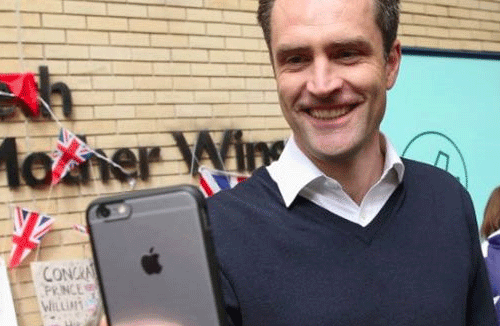

<div class="new">
  <div class="min_new">
    <div class="min_new_left">
      <div class="contents_top"> 目录</div>
      <div class="contents_bottom">
        <ul>
          <li><a href="#">
              <div></div><span>什么是精英吧</span></a></li>
          <li><a href="#">
              <div></div><span>在线学习</span></a></li>
          <li><a href="#">
              <div></div><span>在线编程</span></a></li>
          <li><a href="#">
              <div></div><span>课后小测试</span></a></li>
          <li><a href="#">
              <div></div><span>圈子聚会</span></a></li>
          <li><a href="#">
              <div></div><span>奖学制度</span></a></li>
          <li><a href="#">
              <div></div><span>专家一对一答疑</span></a></li>
          <li><a href="#">
              <div></div><span>招聘就业</span></a></li>
        </ul>
      </div>
    </div>
    <div class="min_new_right">
      <div class="new_right_top">
        <h1>引燃了秒拍和小咖秀之后，移动直播会不会是下一场狂欢？</h1><span>6小时前</span><i>来自tech web</i>
      </div>
      <div class="new_right_bottom">
        <p> 题图是今年5月，英国凯特王妃产子，CNN皇家记者Max Foster通过手机直播App-Periscope与无数关注他英国皇室的网友实时互动，并直播威廉王子和凯特王妃如何带着小公主夏洛特离开圣玛丽医院</p>
        <p class="one">而现在，这股移动端视频直播风潮也渐渐吹到了国内</p>
        <p class="one">题图是今年5月，英国凯特王妃产子，CNN皇家记者Max—Foster通过手机直播App-Periscope与无数关注他英国皇室的网友实时互动.CNN皇家记者Max Foster通过手机直播App-Periscope与无数关注他英国皇室的网友实时互动</p>
        <p class="one">如果说，去年九月拿到新浪投资的时候，秒拍还在努力培养中。 题图是今年5月，英国凯特王妃产子，CNN皇家记者Max Foster通过手机直播App-Periscope与无数关注他英国皇室的网友实时互动，并直播威廉王子和凯特王妃如何带着小公主夏洛特离开圣玛丽医院题图是今年5月，英国凯特王妃产子，CNN皇家记者Max Foster通过手机直播App-Periscope与无数关注他英国皇室的网友实时互动。并直播威廉王子和凯特王妃如何带着小公主夏洛特离开圣玛丽医院.</p>
      </div>
    </div>
  </div>
</div>